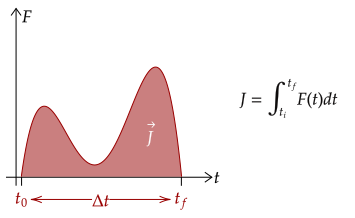

We saw before that the area under the curve of force over time is the impulse. As we saw before, we know that we can mathematically represent this by taking the
Before using the integral, we first note some notation. First, the change in time Δt is the same as the difference of the initial time and the final time, shown below.
Graphically, this corresponds to the starting point of our integral and the ending point of our integral.

With this, we can now construct the integral. The definite integral of force with respect to time over the initial time to the final time is the impulse.

This relation helps us deal with problems wherein the average force isn't given but a force-time graph is given. Of course, we need calculus here to use it.
Exercise 1
The force applied to an object of mass 5.00kg is given by the function . The object starts at rest.
(a) What is the impulse generated after 3.00s?
(b) What is the final velocity of the object after 3.00s?
Solution
The impulse of a force can be zero. To see this, we equate both the equations for impulse, and see what needs to happen.
Now, since we are given that the force is not zero, and the mass certainly can't be zero, it implies that either the duration of the force Δt or the change in velocity Δv is zero. However, they both can't be zero either.
The duration can't be zero, since that would imply that the force never happened.
However, the change in velocity can be zero. For example, in an object revolving around a circle, as it goes through one revolution, the centripetal force is nonzero; however, the velocity at the start and the end is the same; its change is zero.